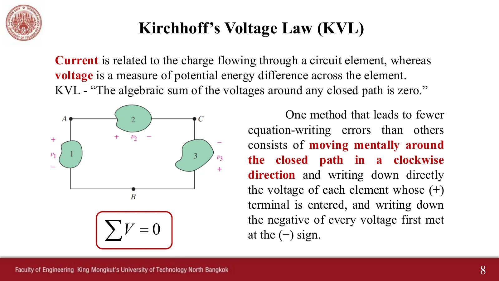
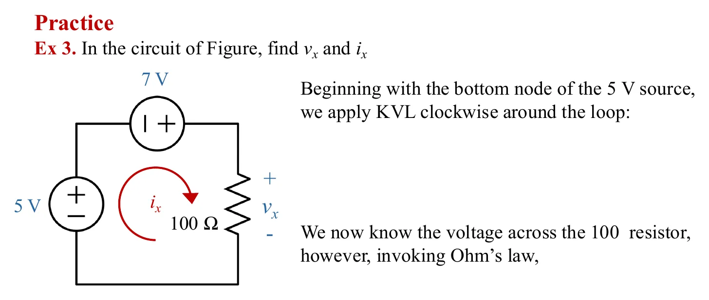
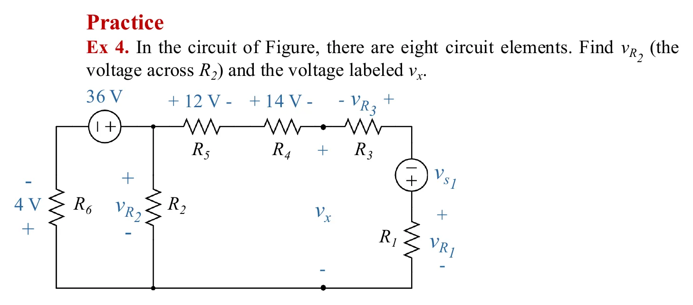
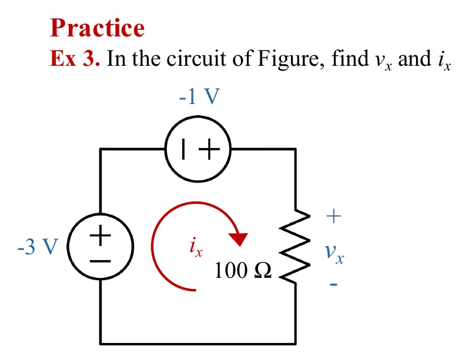
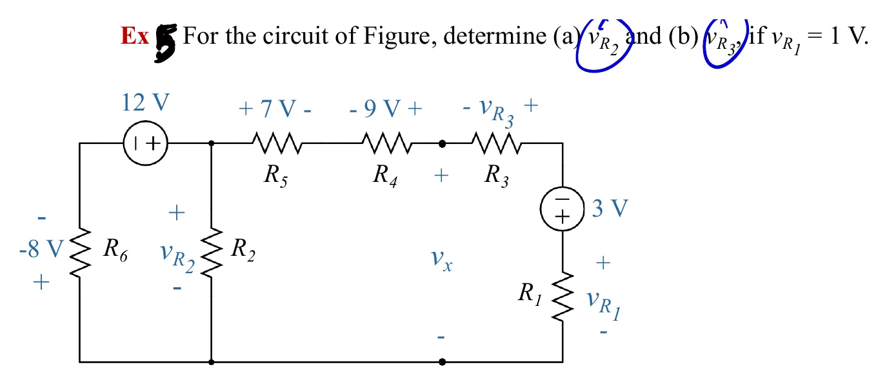
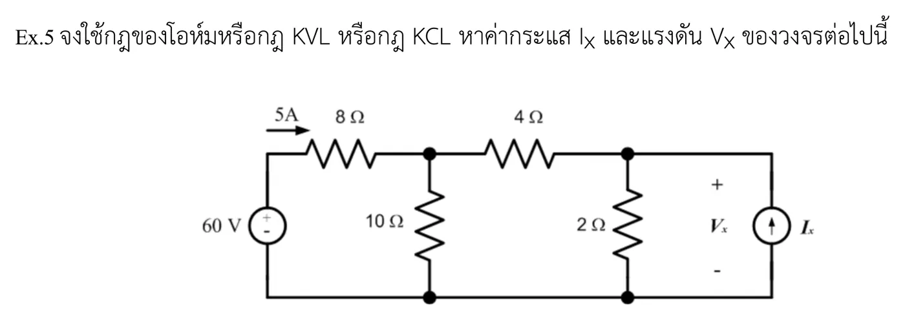
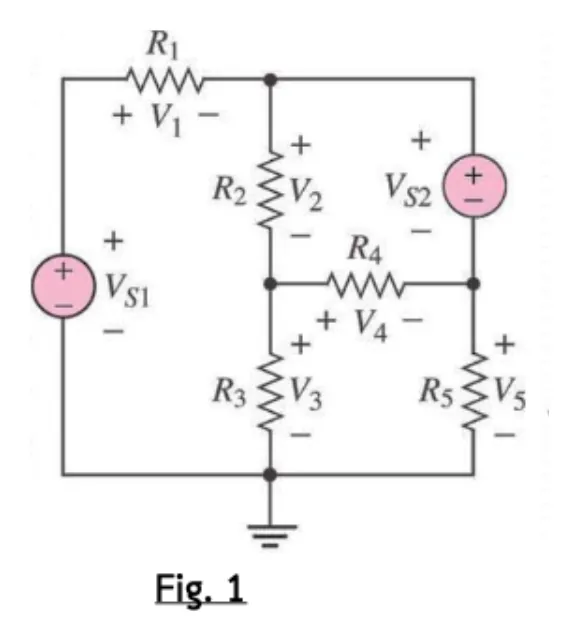
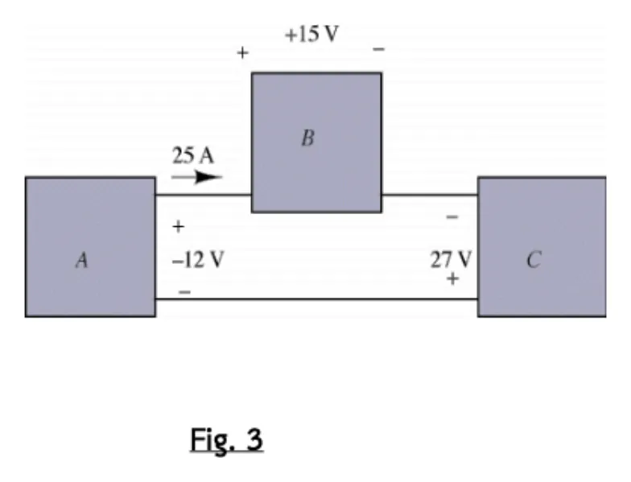
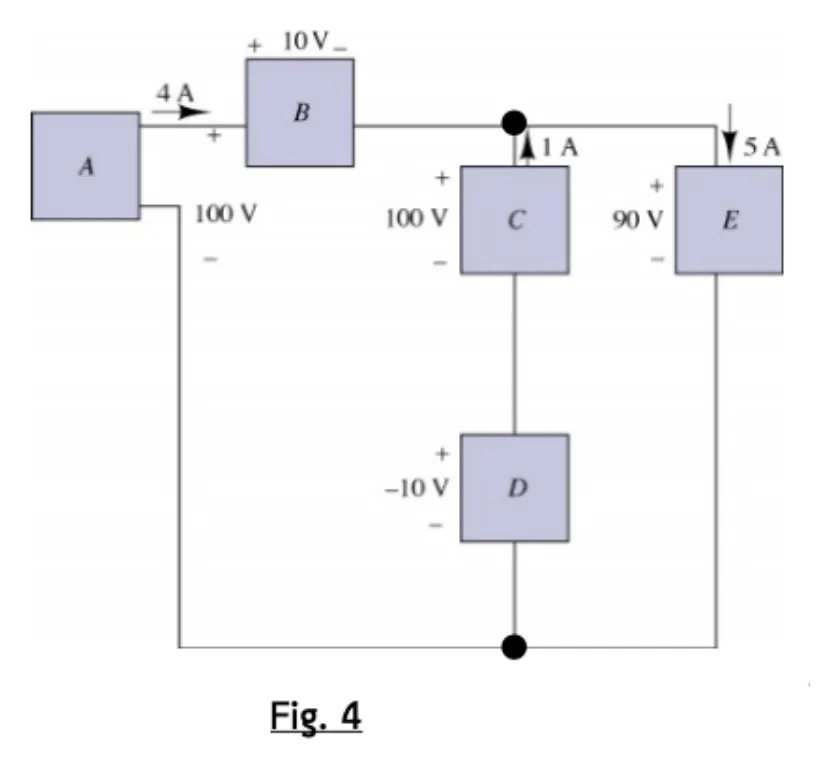

กฎแรงดันของเคียร์ชอฟฟ์ Kirchhoff's voltage law — walk round a loop and you come back to the same potential
Kirchhoff's voltage law Walk round a loop and you come back to the same potential

กระแสเกี่ยวกับประจุที่ไหลผ่านอุปกรณ์ ส่วนแรงดันคือผลต่างของพลังงานศักย์ระหว่างสองขั้ว กฎแรงดันของเคียร์ชอฟฟ์ (Kirchhoff's Voltage Law, KVL) บอกว่าผลรวมเชิงพีชคณิตของแรงดันรอบทางเดินปิดใด ๆ เป็นศูนย์ เพราะเดินวนกลับมาที่จุดเดิม ศักย์ก็ต้องเท่าเดิม สไลด์หน้า 8 แนะวิธีที่ผิดน้อยที่สุด: เดินในใจตามเข็มนาฬิกา เข้าทางขั้ว + ให้เขียน \(+v\) เข้าทางขั้ว − ให้เขียน \(-v\) ในภาพจำลอง ลูกศรสีเขียวคือคนเดิน ทางที่เดินแล้วเป็นเส้นสีเขียว และกราฟด้านล่างคือศักย์ระหว่างเดิน ซึ่งต้องกลับมาที่ศูนย์ หน้านี้มี 8 โจทย์ เรียงทีละข้อ (Ex 3–4 ของสไลด์ แบบฝึกเพิ่มจากสไลด์ในห้องชุดก่อน 3 ข้อ และตัวอย่างเพิ่มเติมข้อ 1 อีก 3 ข้อ)
Current is about the charge flowing through an element; voltage is the difference in potential energy between its two terminals. Kirchhoff's Voltage Law (KVL) says the algebraic sum of the voltages around any closed path is zero: walk back to where you started and the potential must be the same again. Slide p. 8 gives the method with the fewest mistakes: walk mentally clockwise, write \(+v\) when you enter a + terminal and \(-v\) when you enter a − terminal. In the simulations the green arrow is the walker, the path already walked turns green, and the graph below shows the potential along the walk, which must come back to zero. This page has 8 problems, one after another (Ex 3–4 of the slides, 3 extra problems from the earlier in-class slides, and 3 parts of extra example 1).
ประเด็นสำคัญของหน้านี้
- KVL: \(\sum v = 0\) รอบทางเดินปิดใด ๆ เพราะเดินกลับมาที่จุดเดิม ศักย์ต้องเท่าเดิม
- เดินตามเข็มนาฬิกา: เข้าทางขั้ว + เขียน \(+v\) · เข้าทางขั้ว − เขียน \(-v\) ไม่ต้องสนใจว่าเป็นแหล่งจ่ายหรือตัวต้านทาน
- เลือกลูปที่มีตัวไม่รู้ค่าตัวเดียว เช่น Ex 4 ใช้เมชซ้ายหา \(v_{R_2}\) ก่อน แล้วจึงใช้เมชขวาหา \(v_x\)
- ค่าที่ติดลบในโจทย์ ให้แทนทั้งเครื่องหมาย: เข้าทางขั้ว + ของแรงดัน −8 V เขียน \(+(-8)\) · เข้าทางขั้ว − ของแหล่งจ่าย −3 V เขียน \(-(-3)\)
- อุปกรณ์หลายตัวที่ไม่รู้ค่า มองรวมเป็นอุปกรณ์เดียวได้ ถ้ารู้แรงดันรวมของมัน (Ex 4: ส่วนขวาทั้งหมดมีแรงดัน \(v_x\))
Key points of this page
- KVL: \(\sum v = 0\) around any closed path, because walking back to the start brings you back to the same potential.
- Walk clockwise: entering a + terminal, write \(+v\) · entering a − terminal, write \(-v\), whether the element is a source or a resistor.
- Choose a loop with a single unknown: in Ex 4 the left mesh gives \(v_{R_2}\) first, then the right mesh gives \(v_x\).
- Keep the sign of a negative value: entering the + terminal of a −8 V voltage, write \(+(-8)\) · entering the − terminal of a −3 V source, write \(-(-3)\).
- Several unknown elements can be treated as one if you know their total voltage (Ex 4: the whole right part has the voltage \(v_x\)).
Ex 3: จงหา \(v_x\) และ \(i_x\)
Ex 3: find \(v_x\) and \(i_x\)

ดูเฉลยที่ผู้สอนเขียนในห้อง (สไลด์หน้า 9)See the teacher's in-class working (slide p. 9)
Ex 4: วงจรมี 8 อุปกรณ์ จงหา \(v_{R_2}\) และ \(v_x\)
Ex 4: eight elements; find \(v_{R_2}\) and \(v_x\)

ดูเฉลยที่ผู้สอนเขียนในห้อง (สไลด์หน้า 10–11)See the teacher's in-class working (slides pp. 10–11)
แบบฝึกเพิ่มจากสไลด์ฉบับในห้อง ธ.ค. 2568
Extra practice from the in-class slides of December 2025
สามข้อนี้อยู่ในสไลด์ชุดก่อน แต่ฉบับแจก ก.ค. 2569 ตัดออก เก็บไว้ฝึกเรื่องเครื่องหมาย และการใช้ KVL กับ KCL และกฎของโอห์มร่วมกัน
These three problems are in the earlier slides but were dropped from the July 2026 handout. They are kept here to practise signs, and to use KVL together with KCL and Ohm's law.
Ex 3 แบบค่าติดลบ: แหล่งจ่าย −3 V และ −1 V จงหา \(v_x\) และ \(i_x\)
Ex 3 with negative values: −3 V and −1 V sources; find \(v_x\) and \(i_x\)

ฝึกเครื่องหมาย: ถ้า \(v_{R_1} = 1\) V จงหา \(v_{R_2}\) และ \(v_{R_3}\)
Sign drill: if \(v_{R_1} = 1\) V, find \(v_{R_2}\) and \(v_{R_3}\)

ดูคำตอบที่ผู้สอนเขียนในห้องSee the teacher's in-class answers
ใช้กฎของโอห์ม KVL และ KCL หา \(V_x\) และ \(I_x\)
Use Ohm's law, KVL and KCL to find \(V_x\) and \(I_x\)

ดูเฉลยในห้องและเฉลยลายมือSee the in-class working and the handwritten solution
ตัวอย่างเพิ่มเติม (Extra Example) ข้อ 1.1, 1.3 และ 1.4
Extra example 1, items 1.1, 1.3 and 1.4
ข้อ 1.2 (KCL) อยู่ในหน้า 3.1 ส่วนข้อ 1.3 และ 1.4 ทบทวนกฎของโอห์มและกำลังจากบทที่ 2 กับกล่องที่ไม่บอกว่าข้างในคืออะไร: \(R = v/i\) และกำลัง \(P = v\,i\) เมื่อกระแสไหลเข้าทางขั้ว + ค่าบวกแปลว่ารับกำลัง ค่าลบแปลว่าจ่าย
Item 1.2 (KCL) is on page 3.1. Items 1.3 and 1.4 revisit Ohm's law and power from chapter 2 with boxes whose insides are not given: \(R = v/i\), and the power \(P = v\,i\) with the current entering the + terminal; positive means absorbed, negative means delivered.
ข้อ 1.1: เขียน KVL ทั้งสามเมช แล้วหา \(V_1\), \(V_4\), \(V_5\)
Item 1.1: write KVL for all three meshes, then find \(V_1\), \(V_4\), \(V_5\)

ข้อ 1.3: หาความต้านทานของกล่อง A, B และ C
Item 1.3: find the resistance of boxes A, B and C

ข้อ 1.4: ความต้านทานและกำลังของกล่อง A ถึง E กล่องไหนรับ กล่องไหนจ่าย
Item 1.4: resistance and power of boxes A to E; which absorb, which deliver?

ดูเฉลยลายมือของผู้สอน (ตัวอย่างเพิ่มเติมข้อ 1 ทั้งหน้า)See the teacher's handwritten solution (the whole of extra example 1)

ลองทำดู 1 — กราฟศักย์ต้องปิดกลับศูนย์
- ข้อ 1: เปิดเฉลยทีละขั้น ศักย์ลดลง 5 V แล้วลดอีก 7 V จากนั้นตัวต้านทานต้องยกกลับขึ้นมา 12 V จึงได้ \(v_x = 12\) V
- ช่วงของตัวที่ยังไม่รู้ค่าเป็นเส้นประสีชมพู เพราะความสูงของมันถูกบังคับให้ศักย์กลับมาที่ศูนย์พอดี
- ข้อ 3: แหล่งจ่ายค่าติดลบทำให้กราฟขึ้นแทนที่จะลง จึงได้ \(v_x = -4\) V และกระแสวิ่งทวนเข็มนาฬิกา
ลองทำดู 2 — เลือกลูปให้ดี
- ข้อ 2: เมชซ้ายมีตัวไม่รู้ค่าตัวเดียว (\(v_{R_2}\)) จึงทำก่อน เมชขวามี \(v_{R_2}\) กับ \(v_x\) จึงต้องรอ
- Hayt แสดงทางลัดอีกทาง: เดินรอบนอกทั้งวง \(+4 - 36 + 12 + 14 + v_x = 0\) ได้ \(v_x = 6\) V ทันที
- ข้อ 5 ต้องสลับใช้สามกฎ: โอห์มหาแรงดันจากกระแสที่รู้ · KVL หาแรงดันตัวสุดท้ายของลูป · KCL หากระแสที่แยกที่โนด
ลองทำดู 3 — กล่องที่ \(R\) ติดลบ
- ข้อ 7: กล่อง C ได้ \(R = -1.08\ \Omega\) ค่าติดลบแปลว่ามันจ่ายกำลัง ข้างในจึงต้องมีแหล่งจ่าย
- ข้อ 8: กล่อง A และ C จ่ายรวม 500 W ส่วน B, D, E รับรวม 500 W พอดี (กำลังสมดุล)
- คำถาม: ในข้อ 8 ตรวจ KCL ที่จุดดำ และ KVL รอบ A–B–E ได้หรือไม่
Try this 1 — the potential must come back to zero
- Problem 1: open the steps one at a time. The potential drops 5 V, then another 7 V, so the resistor must lift it back up by 12 V: \(v_x = 12\) V.
- The stretch of the unknown is dashed pink, because its height is forced by the walk having to return to zero.
- Problem 3: the negative sources make the graph go up instead of down, so \(v_x = -4\) V and the current runs anticlockwise.
Try this 2 — choosing the loop
- Problem 2: the left mesh has a single unknown (\(v_{R_2}\)), so it comes first; the right mesh has both \(v_{R_2}\) and \(v_x\), so it must wait.
- Hayt shows a shortcut: walk the whole outer loop, \(+4 - 36 + 12 + 14 + v_x = 0\), and \(v_x = 6\) V at once.
- Problem 5 switches between the three laws: Ohm for a voltage from a known current · KVL for the last voltage of a loop · KCL for the current that splits at a node.
Try this 3 — a box with a negative \(R\)
- Problem 7: box C gives \(R = -1.08\ \Omega\). A negative value means it delivers power, so there must be a source inside.
- Problem 8: boxes A and C deliver 500 W in all, while B, D and E absorb exactly 500 W (the power balances).
- Question: in problem 8, can you check KCL at the black dot, and KVL round A–B–E?